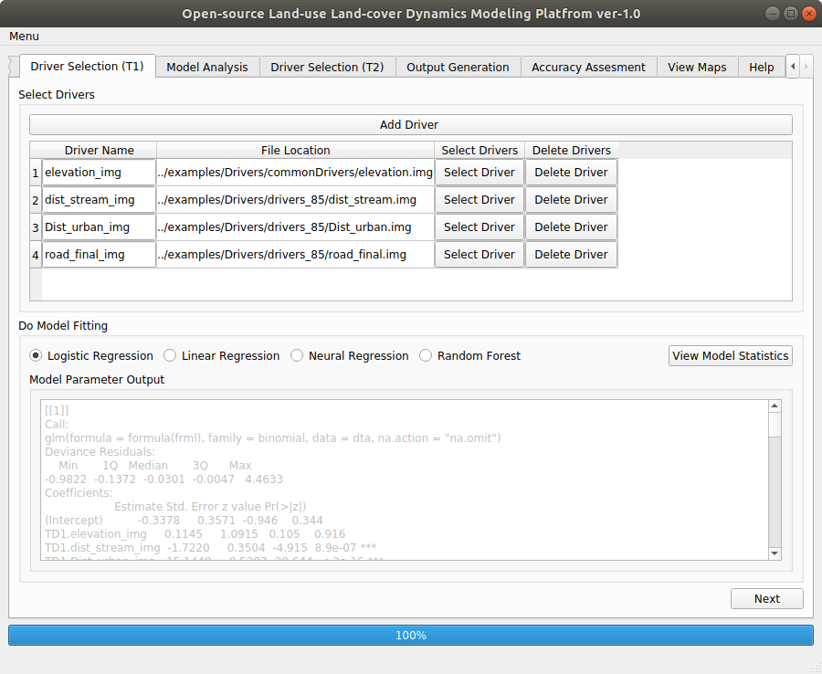

After Clicking on in Data Selection (T0) tab we will get following screen.

Figure 10
The text box for “Model Parameter Output” gives the detail of model fitting.
The text box provides LULC class wise model parameters(coefficient , estimated standard error,z values) .for each drivers. The significations of model coefficients so obtained are indicated as per the list given in Table 4. Click on Next button at the bottom right corner of this tab.
Table 4
Significant Code |
Significant level |
*** |
0 |
** |
99.9 |
* |
99 |
. |
90 |
" " |
<90 |
(OpenLDM) v1.0 IIRS